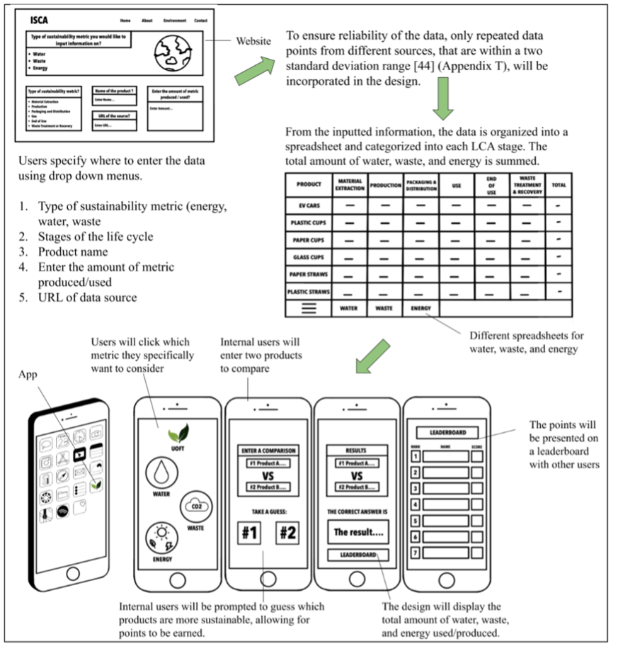
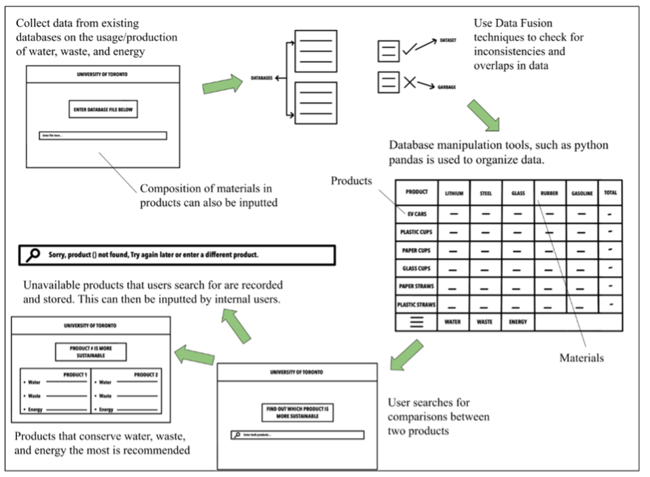
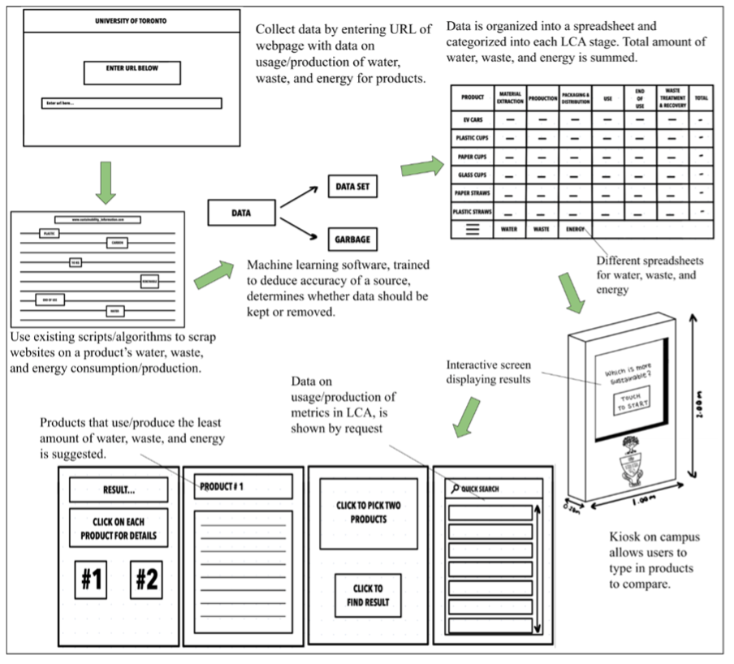
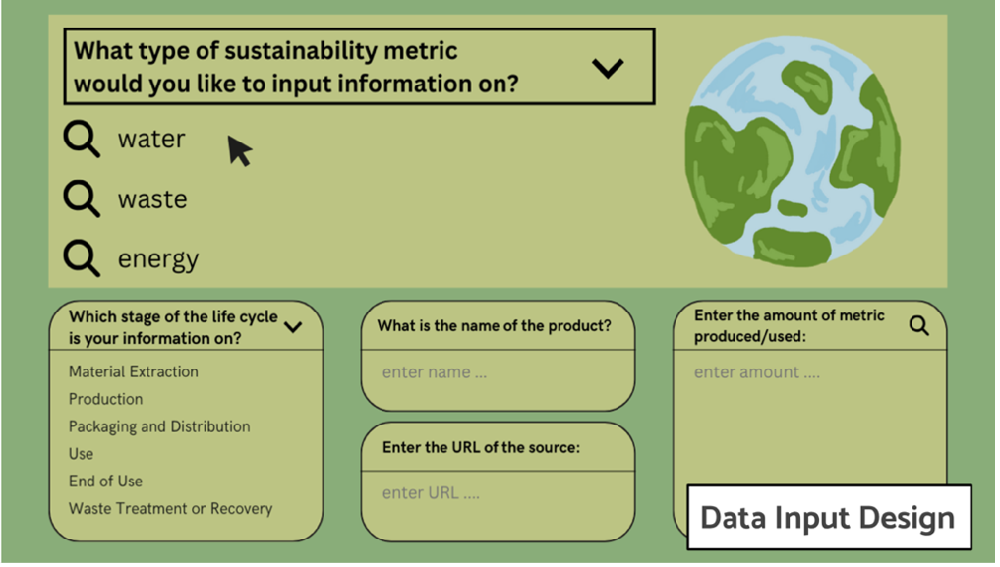
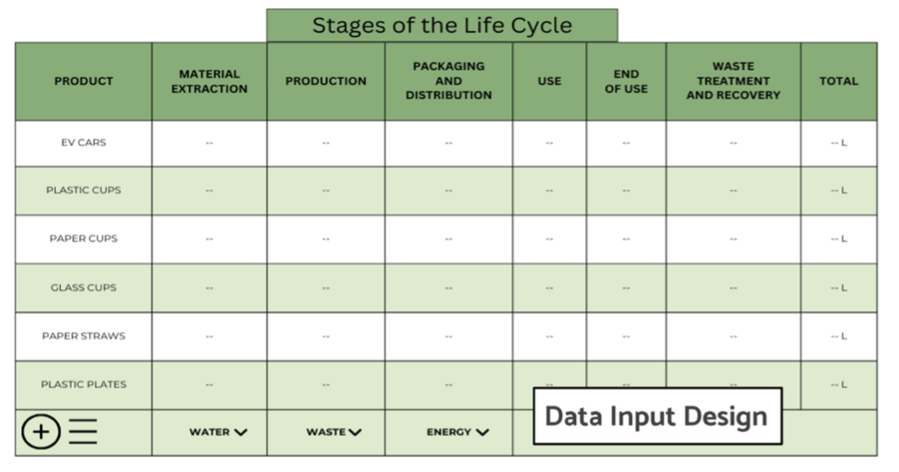
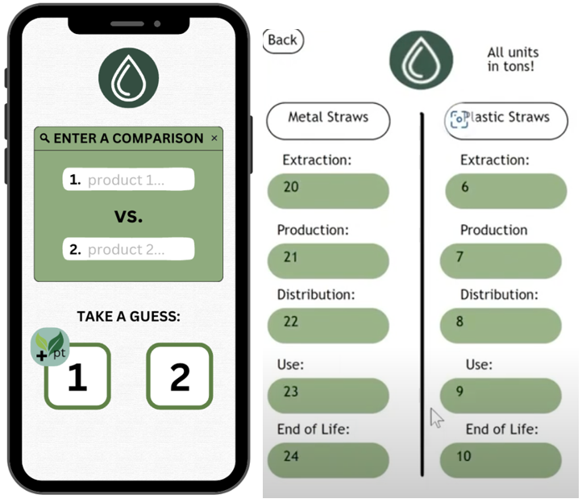

Overview
As part of my Mechanical Engineering coursework, I collaborated with
the University of Toronto’s Sustainability Office on a project aimed
at creating a platform to address common misconceptions and frequently
asked questions about the sustainability of two everyday products. Using
Life Cycle Analysis (LCA) principles, the project focused on delivering
transparent, data-driven insights to support informed decision-making.
Process
The project began with defining requirements in consultation with the client, which required several iterations due to differing team interpretations of the objectives. Through open communication and collaborative refinement, the team successfully established a clear scope and direction.
The primary function of the project was to convey sustainability information about selected products to the UofT community. To achieve this, the design needed to:
- Accept required data input from internal users.
- Select and organize this data for consistent use.
- Ensure accuracy and relevance of the data.
- Conduct a life cycle analysis (LCA).
- Display conclusions clearly to external users.
Additional objectives included creating a platform that was easy to use, accessible, and able to communicate findings effectively. The constraints required that all data used be applicable to Ontario and that the tool remain practical for both client maintenance and public engagement.
During the idea generation phase, the team produced 106 potential solutions. These were systematically narrowed down through a structured design process:
- Consolidation phase combined overlapping or similar concepts.
- Feasibility checks eliminated ideas that were impractical within project limitations.
- Team multi-voting helped prioritize ideas based on collective judgment.
- Morph charts were used to explore and combine subcomponents of different designs.
- A graphical decision-making chart visually compared trade-offs between options.
Through this process, the team arrived at three refined design concepts.



Three design concepts were developed, each integrating a structured flow of information:
- Back-end: Input and organization of sustainability data.
- Database (middle) layer: Structuring and storing data for consistent retrieval.
- Front-end: User interface for presenting life cycle comparisons.
The three solutions were then evaluated against the defined objectives to determine feasibility and alignment with project goals. This comparison led to the selection of the Sustainability Comparison App as the final solution, balancing usability with accurate environmental impact analysis.



My Contributions
- Curated engineering documentation, including requirements, design iterations, and measures of success.
- Acted as Head Editor, finalizing written deliverables, references, and appendices to ensure professional quality.
- Conducted research to validate life cycle data and integrate reliable sustainability information.
- Communicated with the client to align the team’s final solution with project goals.
Outcomes
- Strengthened skills in technical writing and documentation for professional project delivery.
- Gained experience using visual programming tools (scratch-like coding templates) to prototype interactive applications.
- Developed research and data organization skills to support accuracy in sustainability comparisons.
- Enhanced collaboration and communication abilities through client engagement and team coordination.
Additionally, my collaboration skills were assessed using the ITP Metrics to share feedback. This resulted in the feedback:
- "Your role as our head editor greatly contributes to the stability and success of our team, and I deeply appreciate all the
effort you put into enhancing our documents. The night before the CDS deadline, you stepped up as the head editor and stayed
up to edit the document by cutting down the word count, reordering the reference list, etc. Your substantial contributions are
reflected in the attribution table, underscoring the significant impact you've had on our team. So, thank you, and I look forward
to working with you for the rest of the semester!"
- "Haamseni, the team is always appreciating how dependable you are. You always respond fast to text messages and are always there
when help is needed. In particular, the team greatly appreciates how the amount of research you did on our document and how you
organized our many citations and appendices. Additionally, the team also appreciates how you've been sharing more of your ideas
and thoughts, please continue to keep this up in the future!"
This experience deepened my passion for sustainability and strengthened my goal of contributing to the environmental aspects of engineering.
Additionally, communicating with clients, working in a team to address problems, curating professional documents, and considering possible
designs, contributed to my overall interest in this field. It served as a stepping stone, motivating me to gain further experience related
to consulting and engineering design.